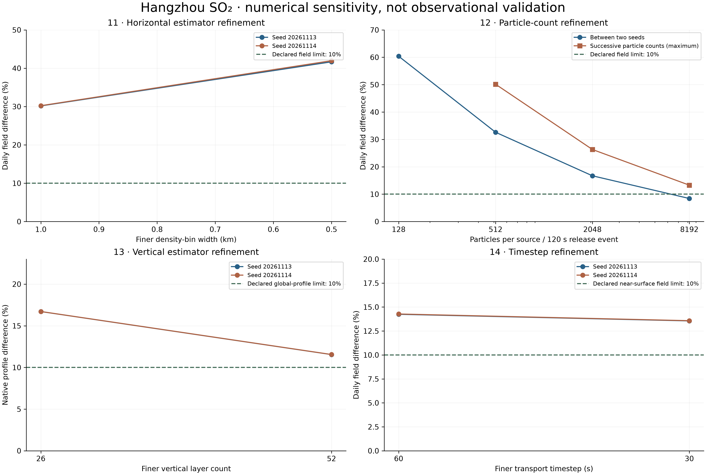

SCIENTIFIC REVIEW · STAGES 11–14
Finer sampling helps.
Convergence remains incomplete.
These controlled studies refine the density estimator, particle sampling, vertical bins and transport timestep. They preserve physical emission mass. They do not demonstrate independently validated citywide air quality.

The two seeds are sensitivity realizations, not confidence intervals. Daily means average 24 hourly endpoint samples. Each panel compares quantities defined in its own study; panel values are not a common error against observations.


Actual criteria and outcomes
| Stage | Metric | Maximum or stated value | Original limit | Outcome |
|---|---|---|---|---|
| 11 | 1 km → 500 m daily field | 41.961% | ≤ 10% | Not met |
| 11 | 1 km → 500 m outlet series | 33.559% | ≤ 5% | Not met |
| 12 | Finest-count two-seed daily field | 8.416% | ≤ 10% | Met |
| 12 | Finest successive-count daily field | 13.283% | ≤ 10% | Not met |
| 12 | Finest successive-count outlet series | 5.327% | ≤ 5% | Not met |
| 13 | 26 → 52 layer global native profile | 11.551% | ≤ 10% | Not met |
| 13 | 26 → 52 layer outlet native profiles | 19.493% | ≤ 5% | Not met |
| 14 | 60 → 30 s near-surface daily field | 13.574% | ≤ 10% | Not met |
| 14 | 60 → 30 s outlet series | 4.299% | ≤ 5% | Met |
| 14 | 60 → 30 s cumulative process totals | 0.129% | ≤ 1% | Met |
What changed — and what did not
- Horizontal grid: 2 km → 1 km → 500 m concentration bins, shared particle paths. Wind remains a horizontally uniform GFS profile; this is not a weather-grid refinement.
- Particle count: 5.53 → 22.12 → 88.47 → 353.89 million emitted particles per realization. Individual particle weights decrease; physical source mass does not increase.
- Vertical grid: 13 → 26 → 52 layers, with a 6.25 m lowest layer. Fixed 0–25 m consistency is distinguished from native-profile convergence.
- Timestep: 120 → 60 → 30 s, paired stochastic increments and fixed 120 s source-release events. This study uses 88.47 million particles per run, less than the particle-count study; it is not a new production recommendation.
Scope and provenance
Four conditional EIA design outlets emit 4.519 kg/h for 360 h, totaling 1,626.84 kg. Their actual commissioning, operation schedule and flow reference basis are not established. Background is excluded. This is a custom passive stochastic particle model with prescribed stability-dependent turbulence and simplified buoyant rise, not WRF, FLEXPART, building CFD or LES.
Stage 15 terrain and surface exchange is pending. This review does not substitute flat-ground fields for that future result.
- Stage 11 original numerical receipt
SHA-256 21e79716e5af21eefafe9a21b6bead2df5492aa96088942d7c0c0d05f57b9edc - Stage 12 original numerical receipt
SHA-256 f347089ba2d0bbb7bbb92f9e0311eb9624591bbc2bc888c6f4ecd5f065f521b2 - Stage 13 original numerical receipt
SHA-256 07d57c476bb89fc546a12cc8d8b617c72927efb7196b111a4bfd31c96e1f6816 - Stage 14 original numerical receipt
SHA-256 08401f1b329cb81661ae6078c58b25b1a0b6d752fb39e94117884f655e65b18e